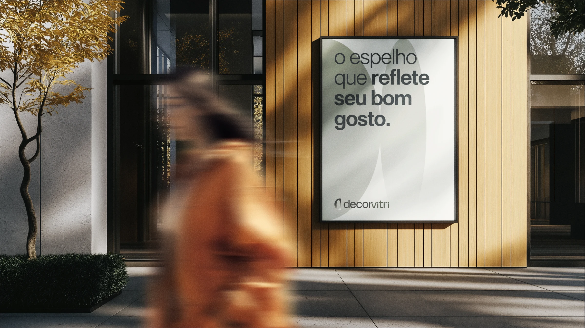

Decorvitri
2024
Uma identidade que reflete personalidade. Design e sensibilidade para uma marca de espelhos orgânicos.
- Projeto
- Branding
- Cliente
- Decorvitri
- Ano
- 2024
- Categorias
- Identidade Visual
- Atuação
- Conceito e identidade visual
O reflexo de cada espaço
Nascida da experiência da Vidraçaria Souza, a Decorvitri apresenta espelhos como peças de expressão e personalização. O projeto de branding traduz essa proposta em uma marca que conversa com arquitetos, designers de interiores, decoradores e pessoas que buscam dar identidade aos seus ambientes.
Forma, transparência e movimento
O símbolo oval vazado se aproxima dos contornos orgânicos dos espelhos. O gradiente remete ao reflexo, enquanto a tipografia personalizada e os tons naturais constroem uma linguagem contemporânea. As aplicações conectam apresentação do produto, embalagem, comunicação e presença de marca.